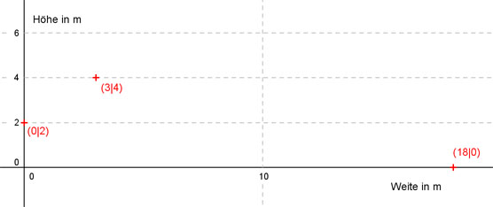
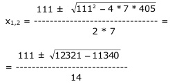
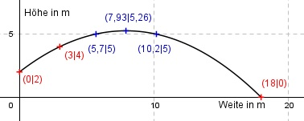

Aufgabe 119 Eine Kugel verlässt die Hand eines Kugelstoßers in einer Höhe von 2 m, hat nach 3 m eine Höhe von 4 m und schlägt nach 18 m auf. Die Flugbahn verläuft entlang des Graphen einer Funktion der Form f(x) = ax2 + bx + c. a) Wie lautet die Funktionsgleichung? b) Welche maximale Höhe erreicht die Kugel? c) In welcher Entfernung ist die Kugel 5 m hoch?  a) 3 Bedingungen: 1. Verlässt die Hand in einer Höhe von 2 m bedeutet: f(0) = 2 --> a * 02 + b * 0 + c = 2 --> c = 2 2. Hat nach 3 m eine Höhe von 4 m bedeutet, der Graph geht durch den Punkt (3|4): (c = 2 eingesetzt) f(3) = 4 --> a * 32 + b * 3 + 2 = 4 --> 9a + 3b + 2 = 4 | -2 9a + 3b = 2 I 3. Schlägt nach 18 m auf bedeutet, der Graph geht durch den Punkt (18|0): (c = 2 eingesetzt) f(18) = 0 --> a * 182 + b * 18 + 2 = 0 --> 324a + 18b + 2 = 0 |-2 324a + 18b = -2 II I * (-6) + II -54a - 18b = -12 324a + 18b = -2 ----------------- 270a = -14 |:270 a = -7/135 a = -7/135 in I eingesetzt: 9 * (- 7/135) + 3b = 2 -7/15 + 3b = 30/15 |+ 7/15 3b = 37/15 |:3 b = 37/45 f(x) = -(7/135)x2 + (37/45)x + 2 b) Für das Maximum gilt: f’(x) = 0 f’(x) = -(14/135)x + 37/45 = 0 |*135 -14x * 111 = 0 |-111 -14x = -111 |:(-14) x = 111/14 = 7,93 m In einer Entfernung von 7,93 m ist die Kugel am höchsten Punkt. f(7,93) = -(7/135) * 7,932 + 37/45 * 7,93 + 2 f(7,93) = -3,26 + 6,52 + 2 = 5,26 m Höhe c) 5 = -(7/135)x2 + 37/45x + 2 |-5 -(7/135)x2 + 37/45x - 3 = 0 |*-135 x2 - 111x + 405 = 0 A, B, C - Formel: A = 7, B = -111, C = 405  111 ± √981 111 ± 31,3 x1,2 = ------------ = ------------ 14 14 111 + 31,3 x1 = ------------- = 10,2 m entfernt 14 111 - 31,3 x2 = ------------- = 5,7 m entfernt 14 